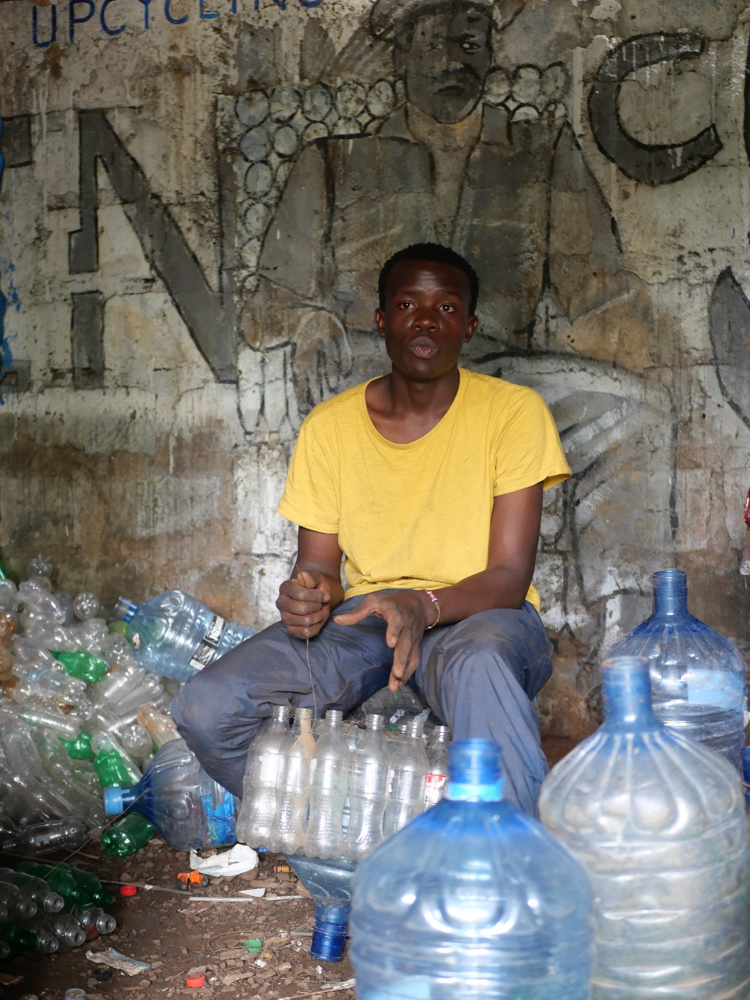
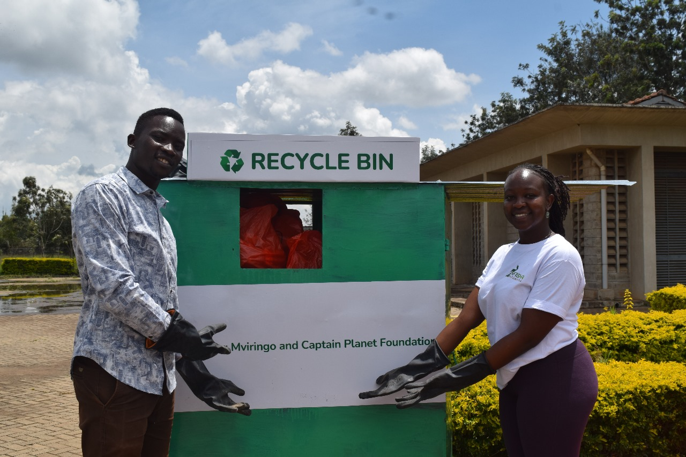

Transforming Waste Management in Kuwinda: A Journey of Community and Resilience
Kibarazani Youth Group is a Community Based Organization found in Kuwinda Slums, which is home to approximately 10,000 people. Due to limited access to waste management services, improper waste disposal and open waste burning is common, leading to numerous health challenges amongst other problems. We recently sat down with the founder of Kibarazani Youth Group to gain a better understanding of Kuwinda, and their problem of waste management and how we can progress together.
Since 2018, Ken and his group have been trying to take up initiative to make their community a cleaner and more habitable place. The journey as Ken described has been full of challenges from lack of community support to lack of finances to implement their solutions. In spite of this, Ken and his group have effectively upcycled about 1,000,000 plastic bottles into various innovative designs since 2018. His projects have been featured on Citizen, National Day celebrations and even had the current President of Kenya, Dr. William Samoei Ruto and some senior government officials visit their workshop in Kibarazani.
Despite all these successes, the situation in Kuwinda has remained more or less the same, this is especially after the construction of a road that destroyed and failed to replace the informal collection center that Kibarazani relied on to segregate waste.
Ken at his workshop in Kuwinda—Kibarazani Workshop.
Ken and his team have encountered several challenges, including illegal waste dumping and combating open waste burning within the community.
In reflecting about pressing on, Ken had the following to say, “Kitu nimelearn despite all these frustration ni that, nisipohelp hii community hakuna mtu atatusaidia because huku ni home na wewe huwezi taka home kwako kukae kuchafu ukijua that there’s something you can do”which directly translates to “One thing I’ve learned despite all these frustrations is that if I don't help this community, no one else will, because this is my home. And you wouldn't want your home to be dirty when you know there’s something you can do about it”
Every Saturday from 6:00 AM to 8:00 AM, Ken and around 30 young volunteers from Kuwinda dedicate their time to clean up their community—the place they call home. This initiative is entirely dependent on the commitment of those who show up each week, driven by their shared sense of responsibility. After the cleanup, the group gathers to reflect on their efforts and discuss the future of their community while sharing a cup of tea.
Ken's Vision for Kuwinda
In charting a way forward, Ken’s vision is that everyone in Kuwinda can be assisted to segregate their waste at home, establish an effective waste management system and maintain cleanliness of their community. Ken also thanks Mviringo Africa for the support in ensuring that the project is centered entirely around the community’s views and opinions as he states that for a solution to work, it must put the community at its center.
Mviringo Africa's Collaborative Efforts in Kuwinda: Defining Sustainable Solutions
Mviringo Africa’s mission is to develop sustainable solutions to environmental and climate challenges with a focus on locally-driven approaches. In collaboration with Kibarazani and as part of Ylab’s project under Project Kuwinda, Mviringo Africa will work to define what sustainable solutions look like for the Kuwinda community, particularly in the areas of waste management and air pollution. The partnership aims to ensure that the community is actively involved in every step of the process and to transform the community’s perception of waste. The project further seeks to promote sustainable waste management practices and empower residents to view waste not as a burden but as an opportunity to create a cleaner, healthier environment.
While there are strong policies in place, their implementation is hindered by limited information dissemination and a lack of clarity among advocates about their roles in the process.
Our Key Demands:
- Simplify the Nairobi Air Quality Act into clear and accessible language tailored for the residents of Kuwinda.
- Break down Section 9(4) of the Sustainable Waste Management Act of 2022, highlighting its importance and relevance to our project.
- Establish realistic goals and timelines to guide the community in understanding the issues and developing practical solutions.
In light of the above key demands, the primary goal of the project is to set up a waste collection center in Kuwinda to help to streamline waste management, reduce open dumping and burning, and improve overall community health and environmental quality.
Through previous projects, Mviringo Africa has been able to advocate and place a recycling bin at the nearby Catholic University of Eastern Africa-a goal that was achieved through community support. The larger community made up of the students at the Catholic University of Eastern Africa attended the cleanup where we launched the recycle bin. Further, we received grant support from Captain Planet Foundation that was able to help in the purchase of the bin as well as conducting educational workshops and cleanups within the university to sustain the recycling system we had implemented.
Launching of the Recycle Bin at the Catholic University of Eastern Africa.
Reflecting on his journey, Ken admitted there were many moments when he felt like giving up. One time that especially stood out for him was when he started making chairs out of plastic.He had been designing this particular chair for almost 2 months and after he was done, he sat on it and it collapsed. Ken’s advice to young people is to press on.
In his words, “Failures will never overtake your success as long as your determination is strong enough.” He goes on to say that there will be times when your failures will challenge you and pull you down, but this is simply a test of your determination. With persistence and consistency, you will ultimately achieve success.